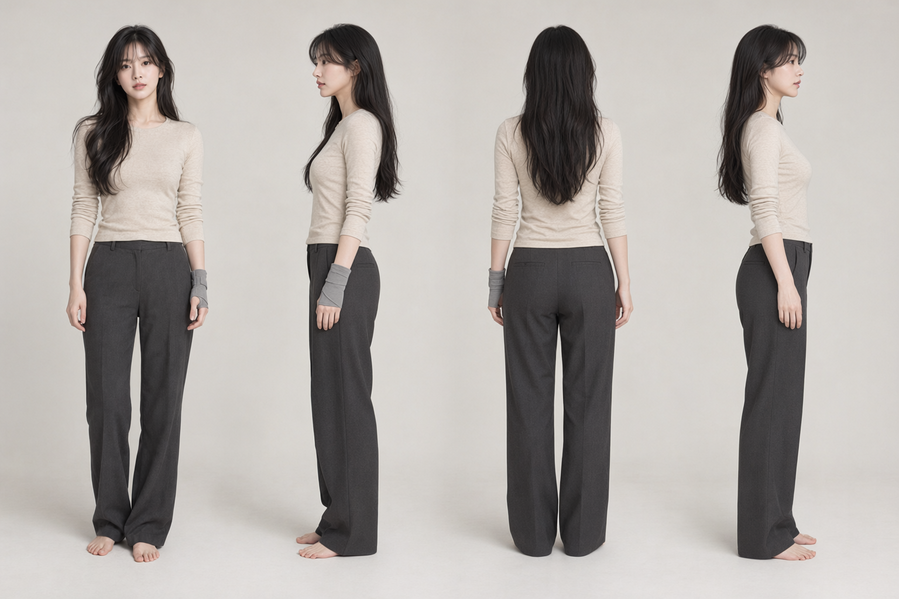
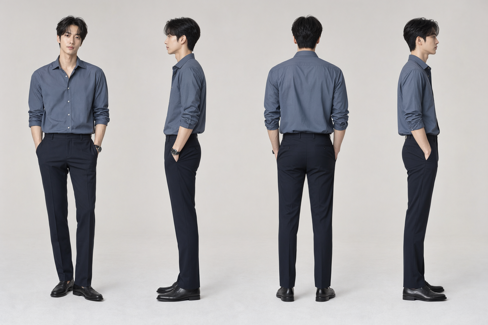
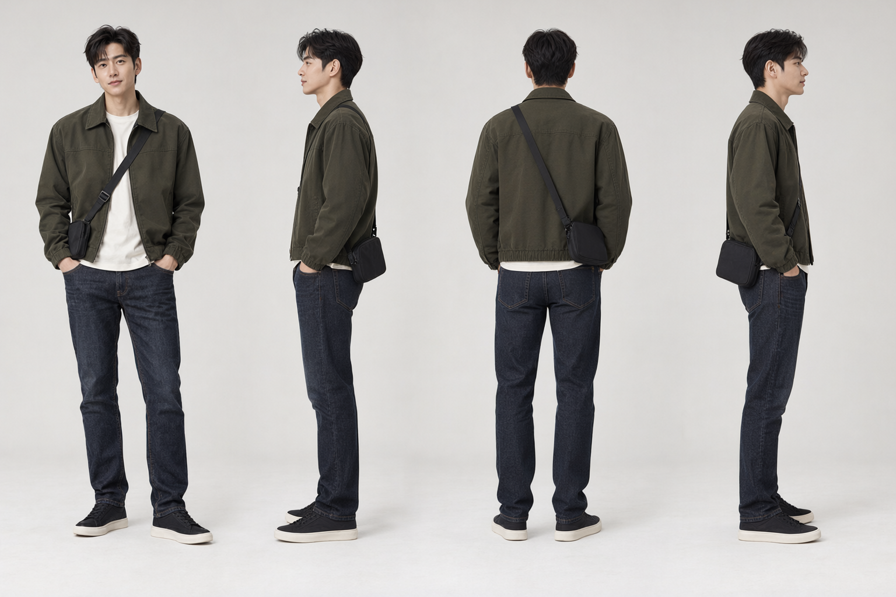

삭제된 11초 · Qwen 턴어라운드
최종 캐스팅: 서윤 첫 번째(A) · 도현 네 번째(D) · 지수 두 번째(B)
각 원본을 Qwen-Image 2.1 Edit에 입력해 만든 4방향 전신 시트 · 1536×1024
시트 순서: 정면 → 왼쪽을 향한 측면 → 후면 → 오른쪽을 향한 측면
CHAR_01 · 서윤 A
 사용자 확정 원본
사용자 확정 원본
PNG 원본 · 클릭하여 확대CHAR_02 · 도현 D
 사용자 확정 원본
사용자 확정 원본
PNG 원본 · 클릭하여 확대CHAR_03 · 지수 B
 사용자 확정 원본
사용자 확정 원본
PNG 원본 · 클릭하여 확대측면·후면의 세부 형상은 정면 원본에서 추정한 생성 결과입니다. 도현·지수의 손은 주머니 안에 있고 서윤의 후면 뒤꿈치는 바지에 가려집니다. 제작·검수 기록